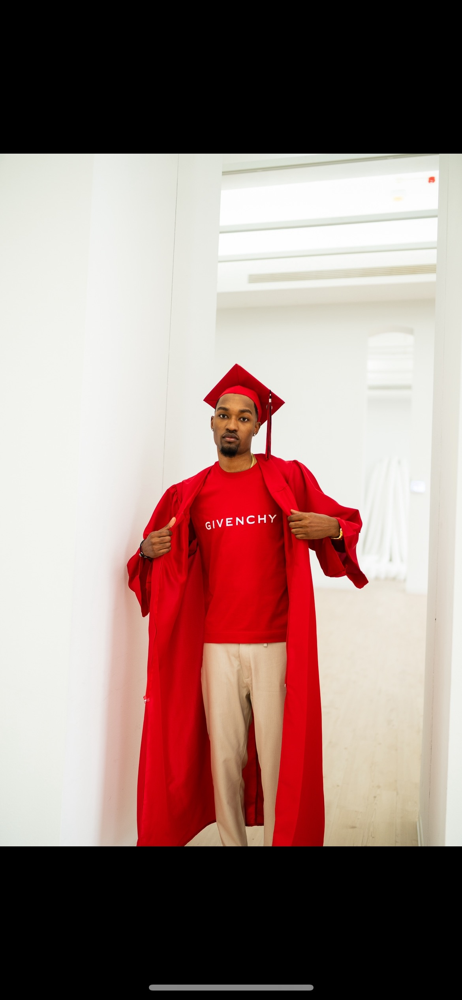
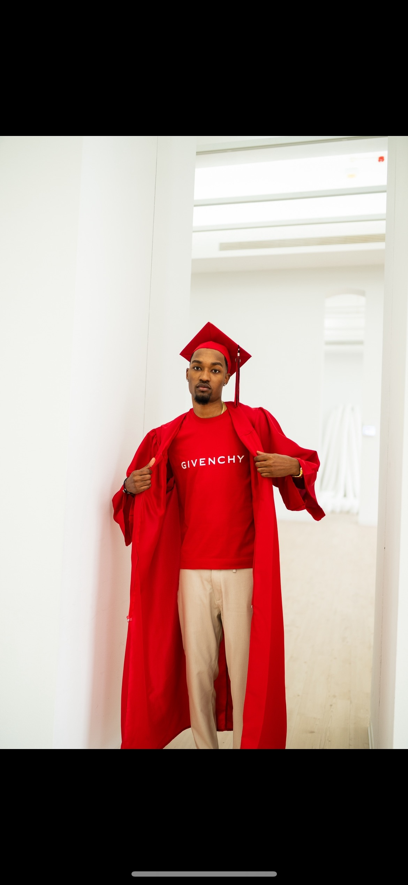

About Concrete Rose 773
"Darrin Cotton Jr was born and raised on the southside of Chicago. He went to highschool at Brooks College Prep where he thrived as a multisport athlete, being a standout in both Football and Basketball. This academic and athlete success allowed DJ Cotton to be heavily recruited as a student athlete. DJ went on to attend the University of Mary in Bismarck, ND transferring to Davenport University in Grand Rapids, MI. At Davenport, DJ shined as a long, athletic defensive back finishing his final season with 30 tackles and 3 interceptions. In April of 2023, DJ Cotton received his bachelor's degree in Sports Management and Business. Born and raised on the south side of Chicago, DJ has seen everything the city has to offer. Being from Chicago has been a huge blessing for DJ because of the culture I have been raised in and my experiences with some of the brightest and most talented young people in the entire world being from Chicago. Through these experiences, he's realized that oftentimes individuals just need a platform to showcase their talents. The first act of charity was the planning and executing of a Charity basketball game at Brooks College Prep which raised money for a local park district and day care in the Roseland community in Chicago. From there Concrete Rose was created and aims to provide a life changing platform for Chicago's youth. More specifically, Concrete Rose aims to put a spotlight on Chicago's youth with hopes to turn these talents into life long careers. Thus far, DJ has led numerous events in the chicagoland area in order to give back to the community and showcase under represented stars in the city of Chicago. DJ plans to get his Masters Degree in Business Administration in 2024 and pursue a career in Sports Business. "
 
